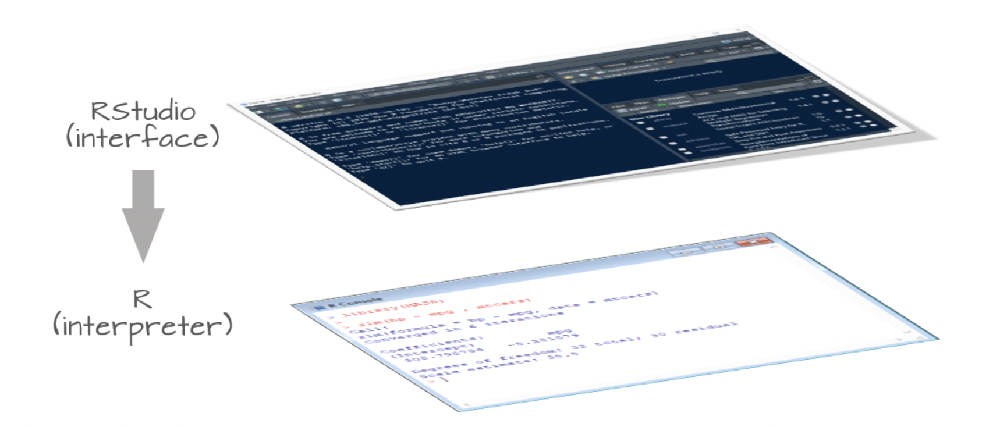
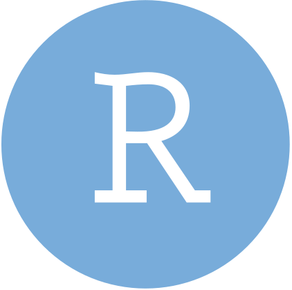
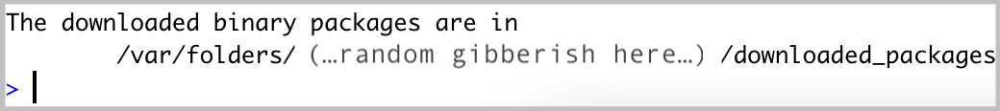
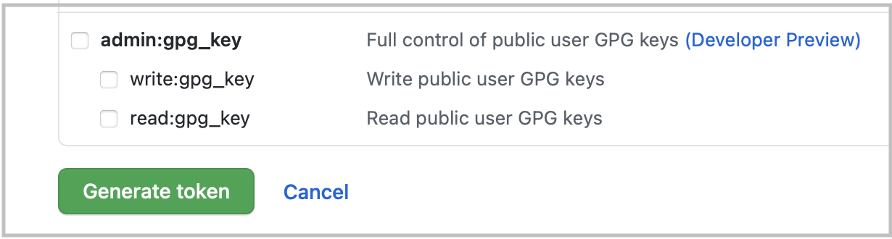
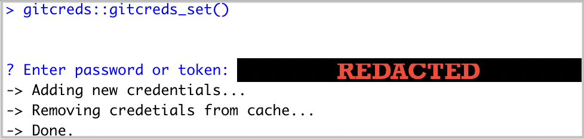

~ END Installation Guide ~

Visit cloud.r-project.org to download the most recent version of R for your operating system. You should have at least version 4.4.0 (released 2024-04-24) running when you start MEDS.
While R is a programming language, RStudio is a software (often referred to as an IDE, Integrated Development Environment) that provides R programmers with a neat, easy-to-use interface for coding in R. There are a number of IDEs out there, but RStudio is arguably the best and definitely most popular among R programmers.
RStudio will not work without R installed, and you won’t particularly enjoy using R without having RStudio installed. Be sure to install both!

Image Credit: Exploratory Data Analysis in R, by Manny Gimond
New install: To install RStudio, visit rstudio.com/products/rstudio/. Download the free (“Open Source Edition”) Desktop version for your operating system. You should install the most up-to-date version available that is supported by your operating system.
Update: If you already have RStudio and need to update, open RStudio, and under Help (in the top menu), choose Check for updates. If you have the most recent release, it will return No update available. You are running the most recent version of RStudio. Otherwise, you should follow the instructions to install an updated version.
Open RStudio (click on the logo shown below):

If upon opening RStudio you are prompted to install Command Line Tools, do it.
xcode-select --install in the RStudio Terminal(Note for Windows users: Windows machines should already have command line tools installed, and XQuartz is only required for Macs).
Quarto is a scientific publishing tool built on Pandoc that allows R, Python, Julia, and ObservableJS users to create dynamic documents, websites, books and more. Don’t worry if you don’t know what all of these are - we will use it to create documents with Rstudio.
Quarto is included with RStudio v2022.07.1+ so there no need for a separate download/install if you have the latest version of RStudio! You can find all releases (current, pre, and older releases) on the Quarto website download page, should you want/need to reference them.
Later in the course we will learn about using Git and Github
for reproducibility, collaboration and tracking code changes
Setting up requires some use of the terminal in Rstudio, if you are familiar with that you can go ahead and set up - otherwise wait and we will take you through
Check to see if git is installed
Open RStudio
In the Terminal, run the following command (choose the option for your operating system):
RStudio Terminal
which gitRStudio Terminal
where git/usr/local/bin/git on a Mac, C:\Program Files\Git\mingw64\bin\git.exe on Windows, though it could differ slightly on your computer), then you have git installed. If you instead get no response at all, you should download & install git here: git-scm.com/downloadsRStudio Terminal
git config --global user.name "Jane Doe"
git config --global user.email janedoe@example.comRStudio Terminal
git config --list --globalRStudio Terminal
git config --global credential.helper 'cache --timeout=10000000'This prevents important credentials (e.g. a GitHub Personal Access Token, PAT, which you’ll set in step #7) from being removed from the server’s memory. You do not need to complete this step when configuring git on your local computer.
First: What even is a personal access token? From GitHub’s documentation:
Personal access tokens (PATs) are an alternative to using passwords for authentication to GitHub when using the GitHub API or the command line.
This means that in order to push your work (files, scripts, etc.) from your laptop (or any other computer) to GitHub, you’ll need to first to generate a PAT. Importantly, you’ll need to generate a PAT for each computer you wish to work from. For example, we will complete the following steps to create a PAT for your personal laptop, but you’ll also need to create a PAT if/when you choose to work on a second computer at home or any of the Bren servers. Good news is that you can follow these same steps when you’re ready to set up additional PATs on other machines. For now, let’s get a PAT for our personal laptop squared away:
{usethis} package in R by running the following in the RStudio Console:RStudio Console
install.packages("usethis")A lot of scary looking red text will show up while this is installing - don’t panic. If you get to the end and see something like below (with no error) it’s installed successfully.

RStudio Console
usethis::create_github_token() 
In the Note field, you should see some autopopulated text: R:GITHUB_PAT. We suggest changing this to something that signifies what machine it’s being used for. For example, if you are generating a PAT for your laptop, you might choose to rename it, My Personal Laptop.
Next, you’ll see a section called Select scopes with reasonable options already selected for you. Do not change anything. Just scroll down to the bottom of that page and click the green Generate token button:

Copy the generated PAT to your clipboard
Back in RStudio, run the following in the Console:
RStudio Console
gitcreds::gitcreds_set()This will prompt you to paste the PAT you just copied from GitHub. Paste the PAT, press Enter to run. You should see something like this show up if all is well so far (you’ll have pasted your PAT where the example below says “REDACTED”):

RStudio Console
usethis::git_sitrep()Does it return information about your connected GitHub account that looks something like below? Great! You’ve configured git and successfully stored your PAT.

Setting an expiration date on personal access tokens is highly recommended in order to keep your information secure. GitHub will send you an email when it’s time to regenerate a token that’s about to expire. Follow the email prompts, then use gitcreds::gitcreds_set() to reset your token.
Cyberduck is a program that allows you to browse files on a remote server. Download here.
You probably already did this - but just in case!
For secure remote access to the UCSB’s campus network when you’re not physically present on campus, you’ll need to download and install the Ivanti VPN client. This will allow you to access UCSB’s technology resources (including servers, journal subscriptions, etc.) anytime and from anywhere.
See this UCSB Information Technology article for directions on how to get started.
~ END Installation Guide ~